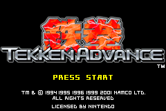

Tekken Advance (USA)
EEPROM 4K Save Format Spec gbakit Built-In 💾 MultiBoot 🎮 4P Link
Cartridge Identity
- Game Code
ATKE(FamilyATK)- Header Title
TEKKEN- Maker / Revision
AF/ rev0- ROM Size
- 8.0 MiB (8,388,608 B)
- Save Media
EEPROM 4K- SHA-256
09fc5ec1649ec162da49044d6ecc84d5c74938ee315b902642bfda0728a95333- Engine / SDK Group
comm-011(32 families)
Screenshots


Link Cable & Multiplayer Communications
This title contains detected communication capabilities: 💾 MultiBoot 🎮 4P Link.
Detailed protocol specifications, SIO registers, Joybus commands, and MultiBoot sequences are documented in the Link & Multiplayer Reference.
- Multi-Player SIO (4P)
- 16-bit ring network · SIOCNT (
0x04000128) literals:0x00693c,0x0069fc,0x006b4c· SIODATA32/SIOMULTI0 (0x04000120) literals:0x006b78,0x006c78 - Single-Cart MultiBoot
- Single-Cartridge MultiBoot (Download Play) client/server handler · Thumb SWI 0x25 (
0xDF25):0x06f1f4,0x0d43d6,0x103ee2,0x1263d2
Battery Save Format Specification
Open Full Save Format SpecDownload save-format.json
- Specification Coverage
- 4 mapped fields · 0 verified checksum(s) · Confidence: HIGH
- gbakit Built-In Support
- Built-in (ATKE)
gbakit save verify ATKE save.sav
gbakit save decode ATKE save.sav
gbakit save fix ATKE damaged.sav -o repaired.savObserved Battery Save Layout
- Fill Byte & Active Size
0x00fill · 301–301 / 512 B active (entropy 3.49 bits/B)- Active Offset Ranges
0x0–0x7,0x9–0xF,0x13,0x17–0x18,0x1A,0x1F,0x22,0x24, +8 more (76 total)- ASCII Magic / Headers
1 NEKKET- Observed Variable Regions
- 0 bytes across 0 spans: None
- Candidate Checksum/Counter Spans
- None
ROM Assets, Compression & Audio
- BIOS Compression
- LZ77 (
0x10): 0 streams · RLE (0x30): 1 streams - ROM Pointer Tables
- 30 tables (0 pointing to validated compressed streams)
- SDK Backup Tags
EEPROM_V122
Asset Map (formatkit.asset-map.v1)
Download ATKE-r0-09fc5ec1649ec162.asset-map.json.gz (127,520 B (124.5 KiB)) Verified PASS · 2.41% coverage
| Metric | Bytes / Value | Entries |
|---|---|---|
| Identified | 161,120 B (157.3 KiB) (1.92%) | 1,043 |
| Mapped | 0 B (0.00%) | 0 |
| Opaque | 41,167 B (40.2 KiB) (0.49%) | 1 |
| Unknown | 8,186,321 B (7.81 MiB) (97.59%) | 995 |
| Total ROM Size | 8,388,608 B (8.00 MiB) | 2,039 |
| Coverage % | 2.41% | — |
| Entries w/ Code Refs | 1,061 / 2,039 (52.04%) | — |
Top Identified Formats: gfx.gba-palette (1,041 · 160,032 B (156.3 KiB)) · audio.m4a-song-table (1 · 896 B) · gba.rom-header (1 · 192 B)
Largest unknown Extents (Headerless / Custom Asset Candidates)
| Offset | Size | Shannon Entropy | Code Refs |
|---|---|---|---|
0x00494028 | 1,036,000 B (1011.7 KiB) | 7.226 bits/B | 0 |
0x00590F28 | 1,010,280 B (986.6 KiB) | 7.303 bits/B | 0 |
0x00343750 | 776,048 B (757.9 KiB) | 7.260 bits/B | 0 |
0x002B3E40 | 588,016 B (574.2 KiB) | 7.149 bits/B | 0 |
0x006879B0 | 495,080 B (483.5 KiB) | 7.258 bits/B | 0 |
gzip -dk ATKE-r0-09fc5ec1649ec162.asset-map.json.gz && gbakit map verify rom.gba ATKE-r0-09fc5ec1649ec162.asset-map.json
gbakit assets export rom.gba --asset-map ATKE-r0-09fc5ec1649ec162.asset-map.json -o out/Text, Fonts & Scene Data
- Primary Text Encoding
- Plain ASCII (uncompressed) (
247ASCII strings ·2Shift-JIS runs) - Font & VWF Indicators
- VWF Width Table 1bpp Font · BIOS SWIs: BitUnPack
0x10:16· LZ770x11/12:25· Huffman0x13:13· RLE0x14/15:27 - Scene & Packaging
33ROM pointer tables (≥32 entries,5≥200) ·3relativeu32TOCs ·208OAM metasprite hits · FourCC:PACK
Hardware MMIO Subsystems
ppu_display0x8000908,0x80009ec,0x800d638,0x8012060,0x801275c,0x80152c4
Regional Variants & Revisions (Family ATK)
- Tekken Advance (Europe) (
ATKP, 8 MiB) - Tekken Advance (Japan) (
ATKJ, 8 MiB)